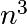

2.4. Optimizing code¶
Author: Gaël Varoquaux
This chapter deals with strategies to make Python code go faster.
Prerequisites
Chapters contents
2.4.1. Optimization workflow¶
- Make it work: write the code in a simple legible ways.
- Make it work reliably: write automated test cases, make really sure that your algorithm is right and that if you break it, the tests will capture the breakage.
- Optimize the code by profiling simple use-cases to find the bottlenecks and speeding up these bottleneck, finding a better algorithm or implementation. Keep in mind that a trade off should be found between profiling on a realistic example and the simplicity and speed of execution of the code. For efficient work, it is best to work with profiling runs lasting around 10s.
2.4.2. Profiling Python code¶
No optimization without measuring!
- Measure: profiling, timing
- You’ll have surprises: the fastest code is not always what you think
2.4.2.1. Timeit¶
In IPython, use timeit (https://docs.python.org/library/timeit.html) to time elementary operations:
In [1]: import numpy as np
In [2]: a = np.arange(1000)
In [3]: %timeit a ** 2
100000 loops, best of 3: 5.73 us per loop
In [4]: %timeit a ** 2.1
1000 loops, best of 3: 154 us per loop
In [5]: %timeit a * a
100000 loops, best of 3: 5.56 us per loop
Use this to guide your choice between strategies.
Note
For long running calls, using %time instead of %timeit; it is
less precise but faster
2.4.2.2. Profiler¶
Useful when you have a large program to profile, for example the
following file:
# For this example to run, you also need the 'ica.py' file
import numpy as np
from scipy import linalg
from ica import fastica
def test():
data = np.random.random((5000, 100))
u, s, v = linalg.svd(data)
pca = np.dot(u[:, :10].T, data)
results = fastica(pca.T, whiten=False)
if __name__ == '__main__':
test()
Note
This is a combination of two unsupervised learning techniques, principal component analysis (PCA) and independent component analysis (ICA). PCA is a technique for dimensionality reduction, i.e. an algorithm to explain the observed variance in your data using less dimensions. ICA is a source separation technique, for example to unmix multiple signals that have been recorded through multiple sensors. Doing a PCA first and then an ICA can be useful if you have more sensors than signals. For more information see: the FastICA example from scikits-learn.
To run it, you also need to download the ica module.
In IPython we can time the script:
In [1]: %run -t demo.py
IPython CPU timings (estimated):
User : 14.3929 s.
System: 0.256016 s.
and profile it:
In [2]: %run -p demo.py
916 function calls in 14.551 CPU seconds
Ordered by: internal time
ncalls tottime percall cumtime percall filename:lineno (function)
1 14.457 14.457 14.479 14.479 decomp.py:849 (svd)
1 0.054 0.054 0.054 0.054 {method 'random_sample' of 'mtrand.RandomState' objects}
1 0.017 0.017 0.021 0.021 function_base.py:645 (asarray_chkfinite)
54 0.011 0.000 0.011 0.000 {numpy.core._dotblas.dot}
2 0.005 0.002 0.005 0.002 {method 'any' of 'numpy.ndarray' objects}
6 0.001 0.000 0.001 0.000 ica.py:195 (gprime)
6 0.001 0.000 0.001 0.000 ica.py:192 (g)
14 0.001 0.000 0.001 0.000 {numpy.linalg.lapack_lite.dsyevd}
19 0.001 0.000 0.001 0.000 twodim_base.py:204 (diag)
1 0.001 0.001 0.008 0.008 ica.py:69 (_ica_par)
1 0.001 0.001 14.551 14.551 {execfile}
107 0.000 0.000 0.001 0.000 defmatrix.py:239 (__array_finalize__)
7 0.000 0.000 0.004 0.001 ica.py:58 (_sym_decorrelation)
7 0.000 0.000 0.002 0.000 linalg.py:841 (eigh)
172 0.000 0.000 0.000 0.000 {isinstance}
1 0.000 0.000 14.551 14.551 demo.py:1 (<module>)
29 0.000 0.000 0.000 0.000 numeric.py:180 (asarray)
35 0.000 0.000 0.000 0.000 defmatrix.py:193 (__new__)
35 0.000 0.000 0.001 0.000 defmatrix.py:43 (asmatrix)
21 0.000 0.000 0.001 0.000 defmatrix.py:287 (__mul__)
41 0.000 0.000 0.000 0.000 {numpy.core.multiarray.zeros}
28 0.000 0.000 0.000 0.000 {method 'transpose' of 'numpy.ndarray' objects}
1 0.000 0.000 0.008 0.008 ica.py:97 (fastica)
...
Clearly the svd (in decomp.py) is what takes most of our time, a.k.a. the
bottleneck. We have to find a way to make this step go faster, or to avoid this
step (algorithmic optimization). Spending time on the rest of the code is
useless.
Profiling outside of IPython, running ``cProfile``
Similar profiling can be done outside of IPython, simply calling the
built-in Python profilers cProfile and
profile.
$ python -m cProfile -o demo.prof demo.py
Using the -o switch will output the profiler results to the file
demo.prof to view with an external tool. This can be useful if
you wish to process the profiler output with a visualization tool.
2.4.2.3. Line-profiler¶
The profiler tells us which function takes most of the time, but not where it is called.
For this, we use the
line_profiler: in the
source file, we decorate a few functions that we want to inspect with
@profile (no need to import it)
@profile
def test():
data = np.random.random((5000, 100))
u, s, v = linalg.svd(data)
pca = np.dot(u[:, :10], data)
results = fastica(pca.T, whiten=False)
Then we run the script using the kernprof.py program, with switches -l, --line-by-line and -v, --view to use the line-by-line profiler and view the results in addition to saving them:
$ kernprof.py -l -v demo.py
Wrote profile results to demo.py.lprof
Timer unit: 1e-06 s
File: demo.py
Function: test at line 5
Total time: 14.2793 s
Line # Hits Time Per Hit % Time Line Contents
=========== ============ ===== ========= ======= ==== ========
5 @profile
6 def test():
7 1 19015 19015.0 0.1 data = np.random.random((5000, 100))
8 1 14242163 14242163.0 99.7 u, s, v = linalg.svd(data)
9 1 10282 10282.0 0.1 pca = np.dot(u[:10, :], data)
10 1 7799 7799.0 0.1 results = fastica(pca.T, whiten=False)
The SVD is taking all the time. We need to optimise this line.
2.4.3. Making code go faster¶
Once we have identified the bottlenecks, we need to make the corresponding code go faster.
2.4.3.1. Algorithmic optimization¶
The first thing to look for is algorithmic optimization: are there ways to compute less, or better?
For a high-level view of the problem, a good understanding of the maths behind the algorithm helps. However, it is not uncommon to find simple changes, like moving computation or memory allocation outside a for loop, that bring in big gains.
Example of the SVD¶
In both examples above, the SVD - Singular Value Decomposition - is what takes most of the time. Indeed, the computational cost of this algorithm is roughly  in the size of the input matrix.
However, in both of these example, we are not using all the output of
the SVD, but only the first few rows of its first return argument. If
we use the svd implementation of scipy, we can ask for an incomplete
version of the SVD. Note that implementations of linear algebra in
scipy are richer then those in numpy and should be preferred.
In [3]: %timeit np.linalg.svd(data)
1 loops, best of 3: 14.5 s per loop
In [4]: from scipy import linalg
In [5]: %timeit linalg.svd(data)
1 loops, best of 3: 14.2 s per loop
In [6]: %timeit linalg.svd(data, full_matrices=False)
1 loops, best of 3: 295 ms per loop
In [7]: %timeit np.linalg.svd(data, full_matrices=False)
1 loops, best of 3: 293 ms per loop
We can then use this insight to optimize the previous code:
def test():
data = np.random.random((5000, 100))
u, s, v = linalg.svd(data, full_matrices=False)
pca = np.dot(u[:, :10].T, data)
results = fastica(pca.T, whiten=False)
In [1]: import demo
In [2]: %timeit demo.
demo.fastica demo.np demo.prof.pdf demo.py demo.pyc
demo.linalg demo.prof demo.prof.png demo.py.lprof demo.test
In [2]: %timeit demo.test()
ica.py:65: RuntimeWarning: invalid value encountered in sqrt
W = (u * np.diag(1.0/np.sqrt(s)) * u.T) * W # W = (W * W.T) ^{-1/2} * W
1 loops, best of 3: 17.5 s per loop
In [3]: import demo_opt
In [4]: %timeit demo_opt.test()
1 loops, best of 3: 208 ms per loop
Real incomplete SVDs, e.g. computing only the first 10 eigenvectors, can
be computed with arpack, available in scipy.sparse.linalg.eigsh.
Computational linear algebra
For certain algorithms, many of the bottlenecks will be linear algebra computations. In this case, using the right function to solve the right problem is key. For instance, an eigenvalue problem with a symmetric matrix is easier to solve than with a general matrix. Also, most often, you can avoid inverting a matrix and use a less costly (and more numerically stable) operation.
Know your computational linear algebra. When in doubt, explore
scipy.linalg, and use %timeit to try out different alternatives
on your data.
2.4.4. Writing faster numerical code¶
A complete discussion on advanced use of numpy is found in chapter Advanced NumPy, or in the article The NumPy array: a structure for efficient numerical computation by van der Walt et al. Here we discuss only some commonly encountered tricks to make code faster.
Vectorizing for loops
Find tricks to avoid for loops using numpy arrays. For this, masks and indices arrays can be useful.
Broadcasting
Use broadcasting to do operations on arrays as small as possible before combining them.
In place operations
In [1]: a = np.zeros(1e7) In [2]: %timeit global a ; a = 0*a 10 loops, best of 3: 111 ms per loop In [3]: %timeit global a ; a *= 0 10 loops, best of 3: 48.4 ms per loop
note: we need global a in the timeit so that it work, as it is assigning to a, and thus considers it as a local variable.
Be easy on the memory: use views, and not copies
Copying big arrays is as costly as making simple numerical operations on them:
In [1]: a = np.zeros(1e7) In [2]: %timeit a.copy() 10 loops, best of 3: 124 ms per loop In [3]: %timeit a + 1 10 loops, best of 3: 112 ms per loop
Beware of cache effects
Memory access is cheaper when it is grouped: accessing a big array in a continuous way is much faster than random access. This implies amongst other things that smaller strides are faster (see CPU cache effects):
In [1]: c = np.zeros((1e4, 1e4), order='C') In [2]: %timeit c.sum(axis=0) 1 loops, best of 3: 3.89 s per loop In [3]: %timeit c.sum(axis=1) 1 loops, best of 3: 188 ms per loop In [4]: c.strides Out[4]: (80000, 8)
This is the reason why Fortran ordering or C ordering may make a big difference on operations:
In [5]: a = np.random.rand(20, 2**18) In [6]: b = np.random.rand(20, 2**18) In [7]: %timeit np.dot(b, a.T) 1 loops, best of 3: 194 ms per loop In [8]: c = np.ascontiguousarray(a.T) In [9]: %timeit np.dot(b, c) 10 loops, best of 3: 84.2 ms per loop
Note that copying the data to work around this effect may not be worth it:
In [10]: %timeit c = np.ascontiguousarray(a.T) 10 loops, best of 3: 106 ms per loop
Using numexpr can be useful to automatically optimize code for such effects.
Use compiled code
The last resort, once you are sure that all the high-level optimizations have been explored, is to transfer the hot spots, i.e. the few lines or functions in which most of the time is spent, to compiled code. For compiled code, the preferred option is to use Cython: it is easy to transform exiting Python code in compiled code, and with a good use of the numpy support yields efficient code on numpy arrays, for instance by unrolling loops.
Warning
For all the above: profile and time your choices. Don’t base your optimization on theoretical considerations.
2.4.4.1. Additional Links¶
- If you need to profile memory usage, you could try the memory_profiler
- If you need to profile down into C extensions, you could try using gperftools from Python with yep.
- If you would like to track performace of your code across time, i.e. as you make new commits to your repository, you could try: asv
- If you need some interactive visualization why not try RunSnakeRun